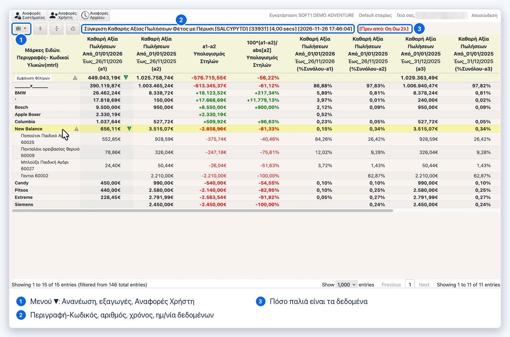

Ιστορικές αναφορές
Κάθε εκτέλεση αναφοράς καταγράφεται στις Αναφορές Αρχείου. Στις σημερινές βλέπετε όλα τα αποτελέσματα, ενώ από τη χθεσινή ημέρα και πριν μένουν τα σύνολα, όπως ήταν τότε.
Τι κάνει#
Με κάθε Εμφάνιση Αναφοράς δημιουργείται μια εγγραφή στις Αναφορές Αρχείου, με:
- τις ρυθμίσεις που είχε τότε η αναφορά,
- τα αποτελέσματα όπως βγήκαν (από την επόμενη ημέρα μένουν μόνο τα σύνολα),
- την ημερομηνία και ώρα της εκτέλεσης.
Όταν ανοίγετε μια εκτέλεση από τις Αναφορές Αρχείου, δεν ξανατρέχει. Βλέπετε τα αποθηκευμένα νούμερα, ακόμα κι αν στο μεταξύ άλλαξαν τα δεδομένα στο SoftOne. Στις εκτελέσεις από τη χθεσινή ημέρα και πριν μένουν μόνο τα σύνολα, όχι οι αναλυτικές γραμμές.
Πότε το χρησιμοποιώ#
- Στη σύσκεψη του μήνα παρουσιάσατε μια εικόνα πωλήσεων. Μετά από εβδομάδες, κάποιος ρωτά «ποια ήταν τα σύνολα που δείξαμε τότε;». Ανοίγετε την εκτέλεση από τις Αναφορές Αρχείου.
- Θέλετε να δείτε πόσο άλλαξαν τα σύνολα από τότε. Ανοίγετε την παλιά εκτέλεση και, δίπλα, πατάτε Ανανέωση για μια νέα.
Βήματα#
- Στη λίστα, πατήστε Αναφορές Αρχείου. Η πιο πρόσφατη εκτέλεση είναι πρώτη.
- Βρείτε την εκτέλεση (αναζήτηση με όνομα ή κωδικό, στήλη Ημ/νία Δημιουργίας).
- Πατήστε πάνω της. Ανοίγουν τα αποθηκευμένα αποτελέσματα σε νέα καρτέλα (για παλαιότερες ημέρες, τα σύνολα).
- Πάνω από τον πίνακα βλέπετε την ημερομηνία των δεδομένων και πόσο παλιά είναι (π.χ. «[Πριν από: 2η 3ω 15λ]»).
- Για νέα εκτέλεση με τα τρέχοντα δεδομένα, ανοίξτε το μενού ▼ και πατήστε Ανανέωση.

Συμβουλές και συχνά λάθη#
- Αρχείο ή Οριακή ημ/νία; Οι Αναφορές Αρχείου δείχνουν τα νούμερα όπως ήταν τη στιγμή της εκτέλεσης (για παλαιότερες ημέρες, μόνο τα σύνολα). Η Οριακή ημ/νία ξανατρέχει την αναφορά με τα σημερινά δεδομένα, σαν να ήταν άλλη μέρα.
- Η εκτέλεση δεν αλλάζει την αρχική αναφορά. Είναι αντίγραφο.
- Πόσο κρατιούνται οι εκτελέσεις; Οι εκτελέσεις μένουν στο Αρχείο για πάντα. Από τη χθεσινή ημέρα και πριν κρατιούνται τα σύνολά τους.
- Θέλετε μια εκτέλεση να είναι πάντα εύκολα προσβάσιμη; Πατήστε Προσθήκη σε Αναφορές Χρήστη όσο τη βλέπετε.
- Σύγκριση δύο εκτελέσεων γίνεται ανοίγοντάς τες σε δύο καρτέλες. Δεν υπάρχει αυτόματη σύγκριση.
Σας βοήθησε αυτό το άρθρο;